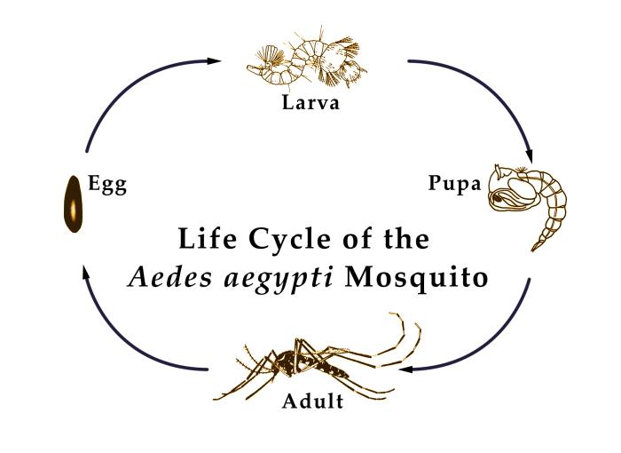
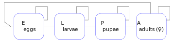
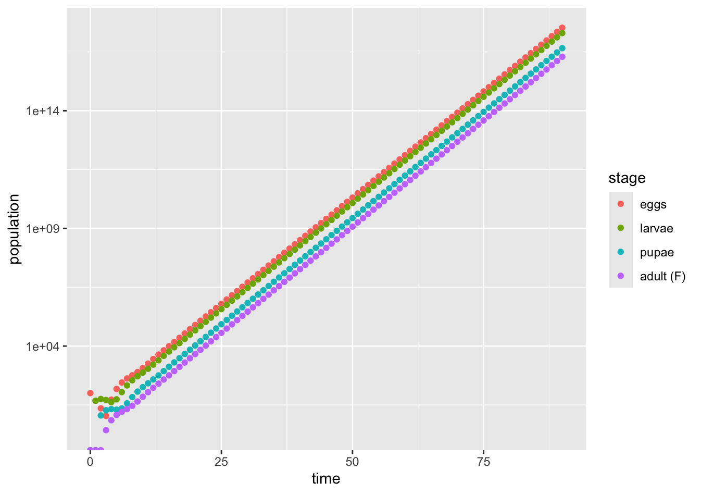
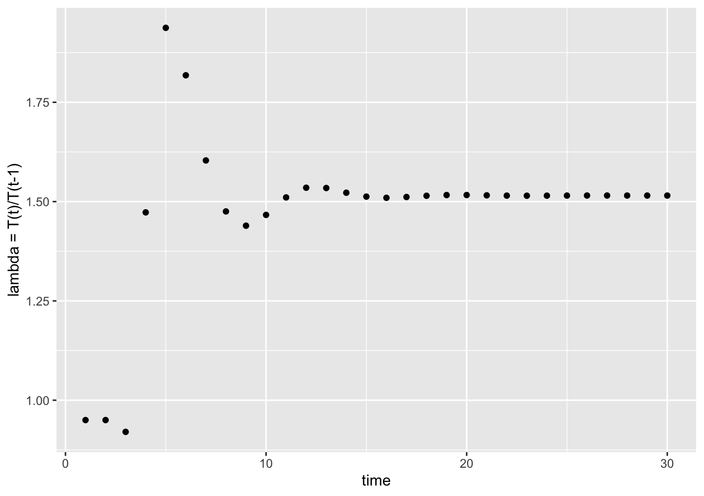
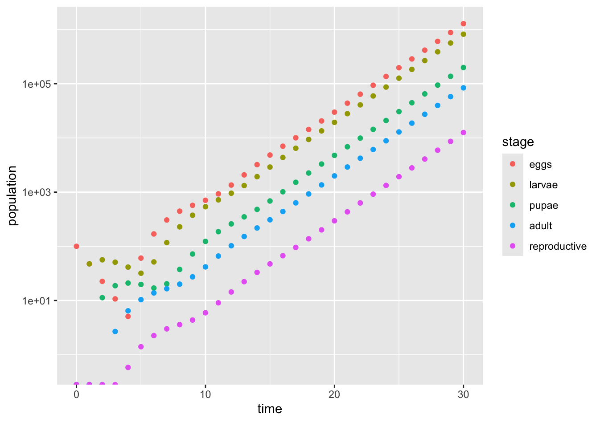
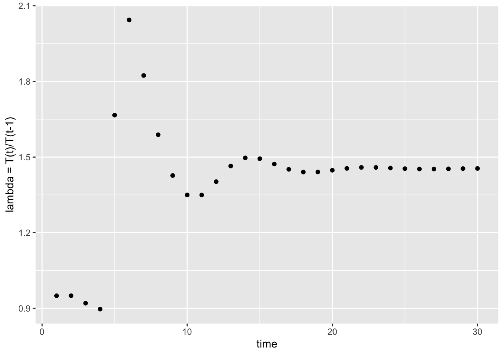
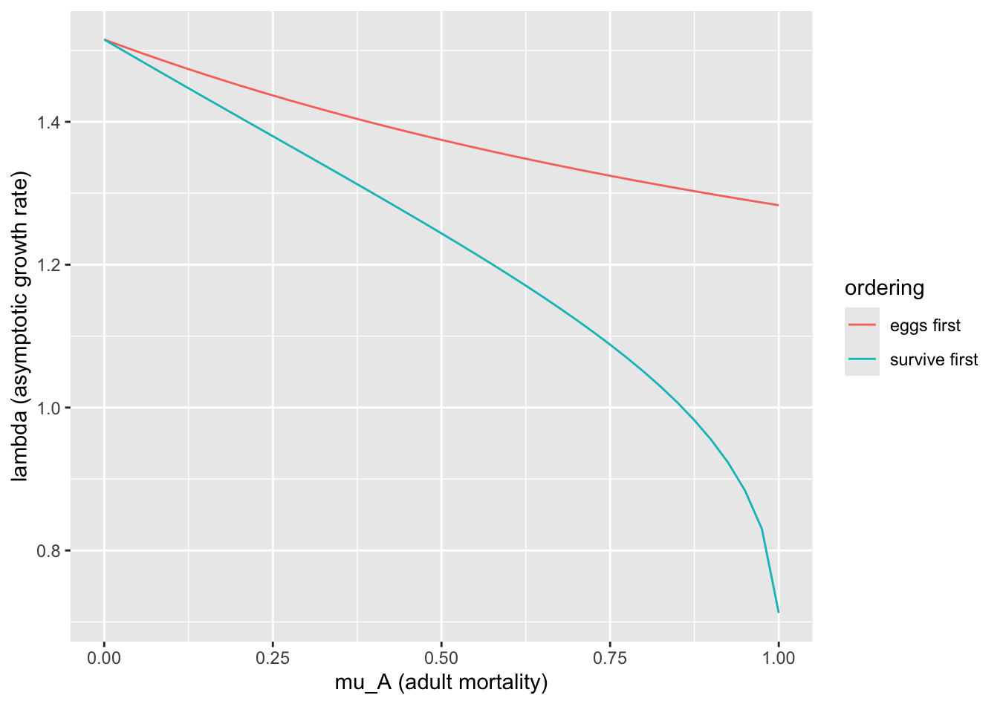

Section 3.3 Example: Mosquito Growth
Many insects exhibit distinct stages of development that are well modeled using structured populations. Females lay fertilized eggs which then take time to develop. When the eggs hatch, larvae emerge and often go through various larval stages of development. There is often a pupal stage in which a final metamorphosis takes place to an emerging adult. In addition, insects reproduce sexually, so it is often useful to distinguish male and female counts separately, at least at the adult stage.
For our illustrative example, we will consider the Aedes aegyptii mosquito (see
https://entnemdept.ufl.edu/creatures/aquatic/aedes_aegypti.htm) that is most responsible for the spread of dengue fever, yellow fever, and chikungunya. Like other Aedes mosquito species, adult female mosquitoes find open still water and lay their eggs on a damp surface that is likely to be submerged by water. Once submerged, the egg will hatch after a few days and a larva will emerge in the water. These larvae swim in the water, eating algae and other smaller organisms in the water. As they develop and grow, the larvae transition between four different instar stages. After the fourth instar stage, the larva enters a pupal stage during which the individual metamorophoses to an adult. Each stage depends on the the presence of water and growth is accelerated with warmer temperatures.
https://phil.cdc.gov/Details.aspx?pid=20204.In order to create a model for the mosquito population, let us identify some key assumptions. Because the mosquitos rely on water for their life cycle and temperatures control the rate of development, the population will naturally fluctuate based on the weather. Adult mosquitos are also able to fly, so their range could be impacted by migration from nearby areas. We will consider a simplified population with constantly available water supplies and steady temperatures. That is, we might suppose we are looking at optimal growth by the population under ideal conditions.
For a simplified model, we will consider only four stages—eggs, larvae, pupae, and adults. In addition, at the adult stage for this model, we will only consider female adults since they are the only subpopulation that will actually produce eggs. If we wanted our model to include mating interactions in some way, then we would separately consider the male and female subpopulations. Development is measured in terms of days, so our model will use a time step of 1 day.

Subsection 3.3.1 Model Equations and Parameters
We now work to develop model parameters based on our reference material (
https://entnemdept.ufl.edu/creatures/aquatic/aedes_aegypti.htm). Under ideal conditions, we see that an egg should hatch in about two days. Larvae go through four instar stages, where the last stage is longest at about three days. We will assume that the average length of the larval stage is four days. The pupal stage takes about two days. The adults survive between two weeks to a month and are able to reproduce up to five times. Each batch of eggs is typically between 100 and 200 eggs. We do not have specific figures for mortality rates, which will depend on the local conditions.How do we go from durations of stages to model transition rates? One approach would be to have a different stage for each age in a given stage. This would have two different egg stages. New eggs would all go in the first stage. All eggs that survived one day would transition to the second age stage. All eggs that survived the second day would transition to the first larval stage. This would be repeated until we reached the adult stage, requiring a total of 8 different developmental stages. Such an age-based model works well if timing is very clearly synchronized.
A second approach is to think of transitions happening randomly so that the average time of transition matches the reported values. We build from a mathematical property of a geometric random variable, which counts how many times we repeat a random test (like a coin flip) before an event occurs. If the probability of the event happening on a given trial is \(p\text{,}\) then the average number of attempts before the first success occurs is given by \(1/p\text{.}\) Consequently, if we to perform a daily test on whether to transition or not such that the average number of days spent prior to the transition is given by \(\tau\text{,}\) then we want that daily test to occur with probability \(p=1/\tau\text{.}\) This probability will then be the fraction of the number of individuals that experience the transition. This random approach using average times is the least-possibly synchronized model because each individual is effectively starting over every day with a fresh chance to transition.
We will introduce model parameters in the abstract and then assign specific values based on the given data. Suppose that eggs have an equal chance of dying each day, with a probability \(\mu_{E}\text{.}\) The fraction of eggs that survive the day is therefore \(1-\mu_{E}\text{.}\) Of these eggs, some transition to the larval stage with a probability \(p_{E}\) while the remainder \(1-p_{E}\) stay in the egg state another day. Based on the properties of a geometric random variable, we want \(p_{E} = 1/\tau_{E}\) where \(\tau_{E}\) is the average duration of the egg state. In a similar way, larvae will have a probability \(\mu_{L}\) of dying each day and a probability \(p_{L}\) of transitioning to the pupal stage. For the same reason, pupae will have probabilities \(\mu_{P}\) and \(p_{P}\) for dying and transitioning, respectively. As noted, the mortality probabilities are specific to the environment and will not be found in the general literature.
Adults require a little extra thought. Only half of emerging adults will be female. (This might not even be the correct fraction—an experimentally observed sex ratio would allow us to be more precise.) An adult can live between two weeks and a month but only reproduce up to five times. How can we deal with this? One approach is to spread out the total number of eggs across the entire lifespan of the adult, \(\tau_{A}\text{.}\) That is, if \(N_{egg}\) is the number of eggs in a single laying and there are 5 reproductive episodes, then we have a daily average number of eggs per female given by \(5 N_{egg} / \tau_A\text{.}\) Adults will have a probability of expiring given by \(\eta_{A} = 1/\tau_A\) in order for adults to survive an average of \(\tau_{A}\) days. Alternatively, we could introduce an extra adult stage \(A_2\) during which all reproduction occurs and we contrive transition rates so that this stage is visited an average of 5 times and also so that the average number of days lived equals \(\tau_{A}\text{.}\) This would require adults spend at least one day without reproducing before entering the state of laying eggs. A mathematical subject called recurrence theory allows us to calculate transition rates. For both adult states, we still want a probability of dying given by \(\eta_{A} = 1/\tau_{A}\text{.}\) However, we need nonreproducing adults to have a probability \(p_{A}\) of transitioning to the reproductive state given by \(p_{A} = \frac{5}{\tau_{A}-5}\text{.}\) Otherwise, adults will be in the non-reproductive state the next day.
Based on our analysis, we are ready to write down our model for the mosquito population. If we spread the reproduction over every day of an adult’s life, the state variables will follow the recursive equations
\begin{align}
E_{t+1} \amp = (1-\mu_{E})(1-p_{E}) E_{t} + {\textstyle \frac{5 N_{egg}}{\tau_{A}}} A_{t}\tag{3.3.1}\\
L_{t+1} \amp = (1-\mu_{E}) p_{E} E_{t} + (1-\mu_{L})(1-p_{L}) L_{t}\tag{3.3.2}\\
P_{t+1} \amp = (1-\mu_{L}) p_{L} L_{t} + (1-\mu_{P})(1-p_{P}) P_{t}\tag{3.3.3}\\
A_{t+1} \amp = {\textstyle \frac{1}{2}} (1-\mu_{P}) p_{P} P_{t} + (1-\eta_{A}) A_{t}\tag{3.3.4}
\end{align}
If instead we have two adult stages with reproduction only coming from \(A_2\text{,}\) the recursive equations become
\begin{align}
E_{t+1} \amp = (1-\mu_{E})(1-p_{E}) E_{t} + N_{egg} A_{2,t}\tag{3.3.5}\\
L_{t+1} \amp = (1-\mu_{E}) p_{E} E_{t} + (1-\mu_{L})(1-p_L) L_{t}\tag{3.3.6}\\
P_{t+1} \amp = (1-\mu_{L}) p_L L_{t} + (1-\mu_{P})(1-p_{P}) P_{t}\tag{3.3.7}\\
A_{1,t+1} \amp = \textstyle \frac{1}{2} (1-\mu_{P}) p_{P} P_{t}
+ (1- \eta_{A} - p_{A}) A_{1,t} + (1-\eta_{A}) A_{2,t}\tag{3.3.8}\\
A_{2,t+1} \amp = p_{A} A_{1,t}\tag{3.3.9}
\end{align}
Subsection 3.3.2 Simulation, Asymptotic Growth, and Stable Distributions
The two models are implemented in R in the following listings, initially using an adult lifespan of 28 days and an average number of 100 eggs per reproductive cycle. We start each model with 100 eggs and no mosquitoes in any other stage and follow the model for 90 days. We will graph the number of individuals in each stage and also calculate the daily growth factor \(T_{t}/T_{t-1}\) where \(T_t\) is the total population on day \(t\text{.}\)
# Life cycle parameters
T_egg <- 2
T_larva <- 4
T_pupa <- 2
T_adult <- 28
N_egg <- 100
# Model parameters
# E,L,P mortality probabilities are arbitrarily set -- not based on life cycle
m_E <- 0.05
m_L <- 0.05
m_P <- 0.05
p_E <- 1/T_egg
p_L <- 1/T_larva
p_P <- 1/T_pupa
e_A <- 1/T_adult
# Create space for data and fill with 0
maxT <- 90
t_seq <- 0:maxT
E_seq <- double(maxT+1)
L_seq <- double(maxT+1)
P_seq <- double(maxT+1)
A_seq <- double(maxT+1)
# Initial values -- only eggs nonzero
E_seq[1] <- N_egg
# Now perform the projections
for (t in 1:maxT) {
E_seq[t+1] <- (1-m_E) * (1-p_E) * E_seq[t] + (5 * N_egg)/T_adult * A_seq[t]
L_seq[t+1] <- (1-m_E) * p_E * E_seq[t] + (1-m_L) * (1-p_L) * L_seq[t]
P_seq[t+1] <- (1-m_L) * p_L * L_seq[t] + (1-m_P) * (1-p_P) * P_seq[t]
A_seq[t+1] <- 0.5 * (1-m_P) * p_P * P_seq[t] + (1-e_A) * A_seq[t]
}
# Visualize dynamics --- expect exponential growth so use log-scale
pop_growth <- ggplot() +
# Add data; use color to label the different stages
geom_point(mapping = aes(x = t_seq, y = E_seq, color = "S1")) +
geom_point(mapping = aes(x = t_seq, y = L_seq, color = "S2")) +
geom_point(mapping = aes(x = t_seq, y = P_seq, color = "S3")) +
geom_point(mapping = aes(x = t_seq, y = A_seq, color = "S4")) +
# Add legend information
scale_color_discrete(breaks=c("S1", "S2", "S3", "S4"),
labels = c("eggs","larvae","pupae","adult (F)"),
name="stage") +
# Add logarithimc scale
scale_y_continuous(trans = "log10") +
# Add labels
labs(x = "time", y = "population")
show(pop_growth)
# Visualize the growth ratio
T_seq <- E_seq + L_seq + P_seq + A_seq
ratio_plot <- ggplot() +
# Add data
geom_point(mapping = aes(x = 1:maxT, T_seq[2:(maxT+1)] / T_seq[1:maxT])) +
# Add labels
labs(x = "time", y = "lambda = T(t)/T(t-1)")
show(ratio_plot)


# Life cycle parameters
T_egg <- 2
T_larva <- 4
T_pupa <- 2
T_adult <- 28
N_egg <- 100
# Model parameters
# E,L,P mortality probabilities are arbitrarily set -- not based on life cycle
m_E <- 0.05
m_L <- 0.05
m_P <- 0.05
e_A <- 1/T_adult
p_E <- 1/T_egg
p_L <- 1/T_larva
p_P <- 1/T_pupa
p_A <- 5/(T_adult - 5) # probability of entering reproductive cycle
# Create space for data and fill with 0
maxT <- 90
t_seq <- 0:maxT
E_seq <- double(maxT+1)
L_seq <- double(maxT+1)
P_seq <- double(maxT+1)
A1_seq <- double(maxT+1)
A2_seq <- double(maxT+1)
# Initial values -- only eggs nonzero
E_seq[1] <- N_egg
# Now perform the projections
for (t in 1:maxT) {
E_seq[t+1] <- (1-m_E) * (1-p_E) * E_seq[t] + N_egg * A_seq[t]
L_seq[t+1] <- (1-m_E) * p_E * E_seq[t] + (1-m_L) * (1-p_L) * L_seq[t]
P_seq[t+1] <- (1-m_L) * p_L * L_seq[t] + (1-m_P) * (1-p_P) * P_seq[t]
A1_seq[t+1] <- 0.5 * (1-m_P) * p_P * P_seq[t] + (1- e_A - p_A) * A1_seq[t] + (1-e_A) * A2_seq[t]
A2_seq[t+1] <- p_A * A1_seq[t]
}
# Visualize dynamics --- expect exponential growth so use log-scale
pop_growth <- ggplot() +
# Add data; use color to label the different stages
geom_point(mapping = aes(x = t_seq, y = E_seq, color = "S1")) +
geom_point(mapping = aes(x = t_seq, y = L_seq, color = "S2")) +
geom_point(mapping = aes(x = t_seq, y = P_seq, color = "S3")) +
geom_point(mapping = aes(x = t_seq, y = A1_seq+A2_seq, color = "S4")) +
# Add legend information
scale_color_discrete(breaks=c("S1", "S2", "S3", "S4"),
labels = c("eggs","larvae","pupae","adult (F)"),
name="stage") +
# Add logarithimc scale
scale_y_continuous(trans = "log10") +
# Add labels
labs(x = "time", y = "population")
show(pop_growth)
# Visualize the growth ratio
T_seq <- E_seq + L_seq + P_seq + A1_seq + A2_seq
ratio_plot <- ggplot() +
# Add data
geom_point(mapping = aes(x = 1:maxT, T_seq[2:(maxT+1)] / T_seq[1:maxT])) +
# Add labels
labs(x = "time", y = "lambda = T(t)/T(t-1)")
show(ratio_plot)


We should notice that the limiting value of \(\lambda\text{,}\) which is the asymptotic growth rate for the population, are slightly different between the two models. The model that distributed reproduciton over all time periods had a slightly higher value (\(\lambda\) just above 1.5) compared to the model with a designated class of reproductive adults (\(\lambda\) just below 1.5). This is comparable to compound interest where dividing growth into more frequent contributions results in larger overall exponential growth because the earlier and more frequent small deposits have a greater potential to grow over time.
We can recover these values theoretically by creating the corresponding matrix models for our recursive equations. In order to do this, we must be careful that we use the same ordering for coefficients in the columns as we use for the recursive models in the rows. That is, if our state variables follow the order \(E, L, P, A\text{,}\) then our coefficients for each row must be put in the matrix for the variables in that same order. The matrix for the first model is given by
\begin{equation*}
M_1 = \begin{bmatrix}
(1-\mu_{E})(1-p_{E}) & 0 & 0 & \frac{5}{\tau_A} N_{egg} \\
(1-\mu_{E}) p_{E} & (1-\mu_{L})(1-p_{L}) & 0 & 0 \\
0 & (1-\mu_{L}) p_{L} & (1-\mu_{P})(1-p_{P}) & 0 \\
0 & 0 & \frac{1}{2} (1-\mu_{P}) p_{P} & (1-\eta_{A})
\end{bmatrix}\text{.}
\end{equation*}
The second model has more state variables, \(E, L, P, A_1, A_2\) and so has a larger matrix,
\begin{equation*}
M_2 = \begin{bmatrix}
(1-\mu_{E})(1-p_{E}) & 0 & 0 & 0 & N_{egg} \\
(1-\mu_{E}) p_{E} & (1-\mu_{L})(1-p_{L}) & 0 & 0 & 0 \\
0 & (1-\mu_{L}) p_{L} & (1-\mu_{P})(1-p_{P}) & 0 & 0 \\
0 & 0 & \frac{1}{2} (1-\mu_{P}) p_{P} & (1-\eta_{A}-p_A) & (1-\eta_A) \\
0 & 0 & 0 & p_A & 0 \\
\end{bmatrix}\text{.}
\end{equation*}
# Create a projection matrix for each model
# Include the parameters defined earlier
M1 <- matrix(data = c(
(1-m_E)*(1-p_E), (1-m_E)*p_E, 0, 0, # column 1
0, (1-m_L)*(1-p_L), (1-m_L)*p_L, 0, # column 2
0, 0, (1-m_P)*(1-p_P), 0.5*(1-m_P)*p_P, # column 3
5/T_adult * N_egg, 0, 0, 1-e_A # column 4
), nrow = 4, ncol = 4)
M2 <- matrix(data = c(
(1-m_E)*(1-p_E), (1-m_E)*p_E, 0, 0, 0, # column 1
0, (1-m_L)*(1-p_L), (1-m_L)*p_L, 0, 0, # column 2
0, 0, (1-m_P)*(1-p_P), 0.5*(1-m_P)*p_P, 0, # column 3
0, 0, 0, 1 - e_A - p_A, p_A, # column 4
N_egg, 0, 0, 1-e_A, 0 # column 5
), nrow = 5, ncol = 5)
print(M1)
print(M2)
# Find eigenvalues and eigenvectors
eig_sys1 <- eigen(M1)
eig_sys2 <- eigen(M2)
# Display the eigenvalues
print(eig_sys1$values)
print(eig_sys2$values)
> print(M1)
[,1] [,2] [,3] [,4]
[1,] 0.475 0.0000 0.0000 17.8571429
[2,] 0.475 0.7125 0.0000 0.0000000
[3,] 0.000 0.2375 0.4750 0.0000000
[4,] 0.000 0.0000 0.2375 0.9642857
> print(M2)
[,1] [,2] [,3] [,4] [,5]
[1,] 0.475 0.0000 0.0000 0.0000000 100.0000000
[2,] 0.475 0.7125 0.0000 0.0000000 0.0000000
[3,] 0.000 0.2375 0.4750 0.0000000 0.0000000
[4,] 0.000 0.0000 0.2375 0.7468944 0.9642857
[5,] 0.000 0.0000 0.0000 0.2173913 0.0000000
> print(eig_sys1$values)
[1] 1.5151824+0.0000000i 0.6546172+0.8071957i 0.6546172-0.8071957i -0.1976311+0.0000000i
> print(eig_sys2$values)
[1] 1.4542159+0.0000000i 0.7936544+0.7849968i 0.7936544-0.7849968i -0.3160652+0.4504780i
[5] -0.3160652-0.4504780i
When we look at the eigenvalues that are displayed, we can see that they are displayed as complex numbers. For each of the matrices, the largest eigenvalue is the first one in the list. This is often the case but never guaranteed, so we always need to check before proceeding to the next step. For the first matrix, \(M_1\text{,}\) the dominant eigenvalue is \(\lambda = 1.5151824 + 0.00000 i\text{.}\) Since the imaginary part of the number is 0, we can just write \(\lambda = 1.5151824\text{,}\) which exactly corresponds to the asymptotic growth rate that we observed in the simulation. Similarly, the second matrix, \(M_2\text{,}\) has a dominant eigenvalue \(\lambda = 1.4542159\) which corresponds to the asymptotic growth of the second model.
Once we know which eigenvalue is dominant, we can extract the corresponding eigenvector to find the stable stage distributions.
# After the previous calculations, use the eigenvectors
v1 <- eig_sys1$vectors[ ,1] # Take column 1
print(v1 / sum(v1))
v2 <- eig_sys2$vectors[ ,1] # Take column 1
print(v2 / sum(v2))
> print(v1 / sum(v1)) [1] 0.56018292+0i 0.33149711+0i 0.07568919+0i 0.03263077+0i > > v2 <- eig_sys2$vectors[ ,1] # Take column 1 > print(v2 / sum(v2)) [1] 0.534465662+0i 0.342275500+0i 0.083015838+0i 0.035009427+0i 0.005233573+0i
Because some of the eigenvalues and eigenvectors had imaginary parts, they are represented as all having imaginary parts even though the imaginary part is 0. We can reformat the numbers as real values using the
Re command.# After the previous calculations, use the eigenvectors
v1 <- Re(eig_sys1$vectors[ ,1]) # Take column 1; force as real
print(v1 / sum(v1))
v2 <- Re(eig_sys2$vectors[ ,1]) # Take column 1; force as real
print(v2 / sum(v2))
> print(v1 / sum(v1)) [1] 0.56018292 0.33149711 0.07568919 0.03263077 > print(v2 / sum(v2)) [1] 0.534465662 0.342275500 0.083015838 0.035009427 0.005233573
Based on the calculated distributions, we see that the first model has a stable distribution with approximately 56.0% as eggs, 33.1% as larvae, 7.6% as pupae, and 3.3% as adult females. Note that our model was developed to ignore adult male mosquitoes. If we wanted a full count, we would need to double the adult population. In a similar way, the second model has a stable distribution with approximately 53.4% as eggs, 34.2% as larvae, 8.3% as pupae, and 3.5% as adult females that are not reproducing and 0.5% as adult females that are reproducing.
Subsection 3.3.3 Exploring the Impact of Additional Mortality
When we implemented our basic model, we took laboratory lifespan of adults to find a probability of expiration \(\eta_{A}\text{.}\) This was fundamentally different from our mortality and survival probabilities that we imposed on the egg, larva, and pupa stages. In those cases, we considered unknown environmental rates that impacted survival. For adults, we considered expiration (natural death) as one of three possible states to which an adult could transition.
Let us rethink adult dynamics by also including environmental mortality on adults by introducing a new mortality probability \(\mu_{A}\) that represents a fraction of adults that die due to external environmental causes, which might include control efforts. Prior to making a transition, an adult must survive the day with probability \(1-\mu_{A}\text{.}\) Consequently, for our first model involving uniform adult reproduction, (3.3.4) will need to be replaced by
\begin{equation}
A_{t+1} \amp = {\textstyle \frac{1}{2}} (1-\mu_{P}) p_{P} P_{t} + (1-\eta_{A}) (1-\mu_{A}) A_{t}\text{.}\tag{3.3.10}
\end{equation}
In a similar way, our second model involving a reproducing class would require changing (3.3.8) and (3.3.8) be rewritten as
\begin{align}
A_{1,t+1} \amp = \textstyle \frac{1}{2} (1-\mu_{P}) p_{P} P_{t}
+ (1- \eta_{A} - p_{A}) (1-\mu_{A}) A_{1,t} + (1-\eta_{A}) (1-\mu_{A}) A_{2,t}\tag{3.3.11}\\
A_{2,t+1} \amp = p_{A} (1-\mu_{A}) A_{1,t}\tag{3.3.12}
\end{align}
We may also need to adjust the fecundity term in (3.3.1) or (3.3.5), depending on whether eggs are deposited before (no change required) or after survival of the day (\(A_{t}\) should be replaced by \((1-\mu_{A}) A_t\)). Eliminating the external environmental mortality by setting \(\mu_{A} = 0\) reverts the models to their original form.
Now that we have a proposed change to the model, how can we explore the impact of this change? Because there is no density dependence, the only fixed point for this system is with no mosquitoes. We can instead look at how changing the mortality impacts the asymptotic growth rate, which is calculated as the dominant eigenvalue to the projection matrix. Computationally, we would do this with a loop that goes through an array of possible values for \(\mu_{A}\text{.}\) For each such value, we will construct a new matrix, calculate its eigenvalue, and identify the largest of the values. In order to track these results, we will record the asymptotic growth rate in a new array. Notice that we do not need to run simulations since the eigenvalue is a more direct method of finding this value. The code listed below implements this for the modified first model with uniform reproduction among all adults. In addition, we calculate the results for putting mortality both before and after egg deposition.
# Create the basic model parameters
T_egg <- 2
T_larva <- 4
T_pupa <- 2
T_adult <- 28
N_egg <- 100
# Model parameters
# E,L,P mortality probabilities are arbitrarily set -- not based on life cycle
m_E <- 0.05
m_L <- 0.05
m_P <- 0.05
p_E <- 1/T_egg
p_L <- 1/T_larva
p_P <- 1/T_pupa
e_A <- 1/T_adult
# Create the array of possible value for m_A
mortality_array <- seq(from=0, to=1, by=0.025)
# Create an array to store our growth rate that is same length
N_pts <- length(mortality_array)
growth_rate_array1 <- double(N_pts)
growth_rate_array2 <- double(N_pts)
# Run through the values and make the calculations
for (i in 1:N_pts) {
# Get the current value
m_A <- mortality_array[i]
# 1st method: deposit eggs then survive
# Create the projection matrix
M <- matrix(data = c(
(1-m_E)*(1-p_E), (1-m_E)*p_E, 0, 0, # column 1
0, (1-m_L)*(1-p_L), (1-m_L)*p_L, 0, # column 2
0, 0, (1-m_P)*(1-p_P), 0.5*(1-m_P)*p_P, # column 3
5/T_adult * N_egg, 0, 0, (1-e_A)*(1-m_A) # column 4
), nrow = 4, ncol = 4)
# Compute eigenvalues and eigenvectors
eig_sys <- eigen(M)
# Identify the maximum eigenvalue (real part)
max_location <- which.max(abs(eig_sys$values))
growth_rate_array1[i] <- Re(eig_sys$values[max_location])
# 2nd method: survive then deposit eggs
# Create the projection matrix
M <- matrix(data = c(
(1-m_E)*(1-p_E), (1-m_E)*p_E, 0, 0, # column 1
0, (1-m_L)*(1-p_L), (1-m_L)*p_L, 0, # column 2
0, 0, (1-m_P)*(1-p_P), 0.5*(1-m_P)*p_P, # column 3
5/T_adult * N_egg * (1-m_A), 0, 0, (1-e_A)*(1-m_A) # column 4
), nrow = 4, ncol = 4)
# Compute eigenvalues and eigenvectors
eig_sys <- eigen(M)
# Identify the maximum eigenvalue (real part)
max_location <- which.max(abs(eig_sys$values))
growth_rate_array2[i] <- Re(eig_sys$values[max_location])
}
# Visualize the results
library(ggplot2)
ggplot() +
geom_line(mapping = aes(x = mortality_array,
y = growth_rate_array1,
color = "1")) +
geom_line(mapping = aes(x = mortality_array,
y = growth_rate_array2,
color = "2")) +
scale_color_discrete(breaks=c("1", "2"),
labels = c("eggs first","survive first"),
name="ordering") +
labs(x = "mu_A (adult mortality)", y = "lambda (asymptotic growth rate)")

The results in Figure 3.3.13 show a fundamental difference between having mortality before or after eggs are deposited. For this model, if all adults have the ability to deposit the designated fraction of eggs before needing to survive the day, the asymptotic growth rate remains above \(\lambda > 1\) for all values of \(\mu_{A}\text{.}\) There would always be enough eggs deposited to see the mosquito population grow even if all adults died after the first day (\(\mu_A = 1\)). On the other hand, if adults need to survive before they can deposit eggs, high values of \(\mu_{A}\) result in \(\lambda < 1\) and the population would decline.